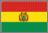
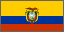
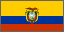
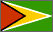
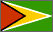
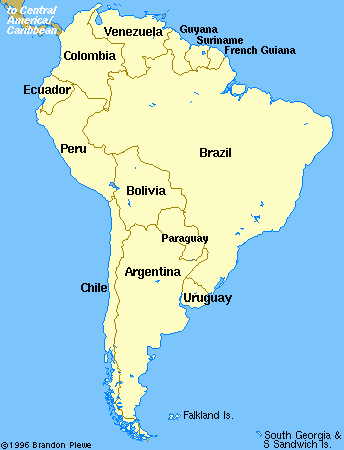

Indigenous signs for countries in Latin America
  David Bar-Tzur
David Bar-Tzur 

- Latin America
- DH [B], PO > signer, FO > NDS, overlaps thumb with that of NDH [A], PO away, FO > diagonally up, with both hands moving forward slighty. The handshapes are somewhat different, but to get the general idea of the arrangement of the hands, see the QuickTime movie at NEEDS Outreach: North/South America.

Flags: World flag database.
Map: Virtual Tourist.
For a quick, interesting resource for facts about this and other countries,
try Mystic Planet - The New Age directory of Planet Earth.
Explanation of glossing system used
(to understand how I describe the signs in this dictionary)
- Argentina (Argentina)
- (1) DH [A], PO down, FO > NDS, brushes away from signer 2x with heel of palm on [A], PO down, FO > DS.1 (2) (2h)[B^ dot] mimes strumming guitar. NDH holds the neck and NDH strums the strings. For a QuickTime movie of this sign, see NEEDS Outreach: Argentina. (3) (2h)[A], POs away, FOs up, touch thumbs to temples.4
- Bolivia (Bolivia)
- The middle and ring fingers are held together against the thumb and the hand, PO up, and the hand is twisted to the side twice like the movement in the sign YELLOW. For a QuickTime movie of this sign, see NEEDS Outreach: Bolivia. (< llama head.)
- Brazil (Brasil)
- (1) [Bb], PO > NDS, FO up, descends in a zig-zag. To see a video of this sign, go to LIBRAS - Dicion‡rio da L’ngua Brasileira de Sinais, click on "B" and then "BRASIL".
- Chile (Chile)
- DH [8] middle finger flicks while hands descends a bit down NDS of chest, from the NDS shoulder. To see someone sign this, go to Deaf in Chile.
- Colombia (Colombia)
- (1) DH [C], PO down, FO > NDS, brushes away from signer 2x with heel of palm on [A], PO down, FO >DS.1 (2) [C], PO > NDS, FO away, touches forehead and moves out while changing FO to up.1 (3) [C], PO away, FO up, touches elbow to NDH [B], PO down, FO >DS and DH twists.3 (4) DH [B], PO > NDS, FO away, elbow rests on NDH palm.4
- Ecuador (Ecuador)
- (1) E-GROUP, that is (2h)[E], POs away touch at thumbs, separate and come together with POs towards and touching on the pinkie side.1 (2) (2h)[E], POs away, FOs up, touch at sides and move in a horizontal circle until they meet again with POs now facing the signer. Same movement as the ASL sign for "family".4
- Guatemala (Guatemala)
- DH [3], PO > signer, FO > NDS, taps on the top of [S], PO > signer, FO > DS.1 To see an animation of this sign, go to
LENGUAJE.
- Paraguay (Paraguay)
- (1) "P".1 (2) (2h)[F], POs away, FOs up. DH touches DS chin, NDH touches NDS temple, then DH rises to touch temple while NDH falls to touch NDS chin.4 (3) [V], PO down, FO away, descends and touches the dorsal (back) side of the NDH [B], PO down, FO > DS. To see a video of this sign, go to Paraguay Deaf Missions.
- Peru (Perú)
- The middle finger of the DH [P] taps the forehead several times.4
- Uruguay (Uruguay)
- "U".1
- Venezuela (Venezuela)
- (1) [V^], PO > signer, twists out at eye level 2x.1 (2) [V], PO away, descends while shaking. (3) DH [V], PO down, FO > NDS, shake at ear twice.4
List of sources cited
 1. Signs around the world: Countries [Videotape]. Burtonsville, MD: Sign Media.
1. Signs around the world: Countries [Videotape]. Burtonsville, MD: Sign Media.
2. R. Claros-Gedovius, personal communication, 1998.
3. C. MacLean, 1999.

Home